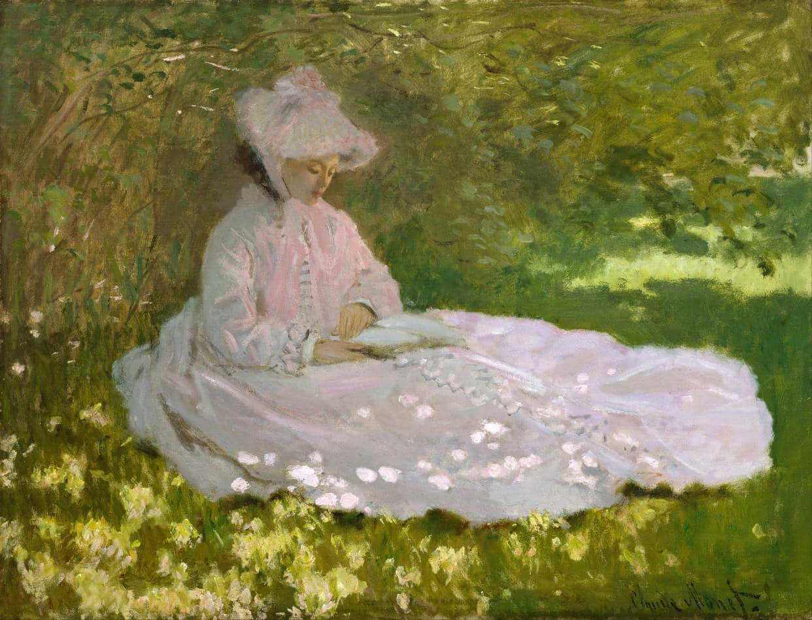
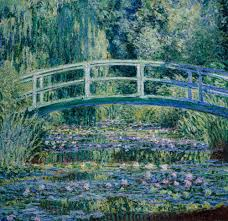
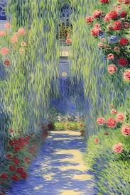
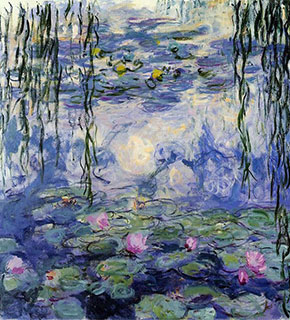
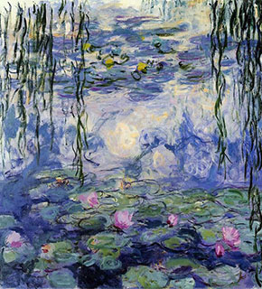
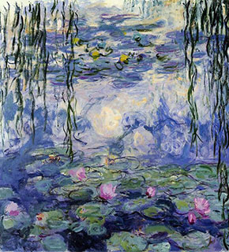

Galeria de Obras



 


Descrição
Bem-vindo ao mundo da arte robótica, onde a precisão da tecnologia se une à expressão criativa humana para criar obras de arte incríveis. Nosso projeto é pioneiro na criação e desenvolvimento de robôs capazes de pintar obras de arte quase idênticas às originais, redefinindo os limites da criatividade e da inovação.Tecnologia por Trás da Arte

Nosso projeto combina o melhor da tecnologia moderna com a sensibilidade artística humana para criar obras de arte incríveis. Utilizamos uma variedade de técnicas e tecnologias inovadoras para garantir que nossos robôs possam reproduzir com precisão as obras originais. Algumas das tecnologias que empregamos incluem:
- Visão Computacional: Nossos robôs são equipados com câmeras avançadas e algoritmos de visão computacional para analisar e compreender os detalhes das obras originais.
- Aprendizado de Máquina: Utilizamos algoritmos de aprendizado de máquina para treinar nossos robôs a reconhecer padrões e estilos artísticos, permitindo-lhes reproduzir uma ampla variedade de obras de arte com precisão.
- Controle de Movimento Preciso: Os robôs são projetados com sistemas de controle de movimento precisos, garantindo que possam aplicar pinceladas com a mesma delicadeza e precisão de um artista humano.
- Feedback Sensorial: Implementamos sensores de feedback que permitem aos robôs avaliar continuamente o progresso de sua obra e ajustar sua técnica conforme necessário para alcançar resultados ótimos.
Estamos constantemente explorando e desenvolvendo novas tecnologias para melhorar ainda mais a capacidade dos nossos robôs e expandir os horizontes da arte robótica.
Sobre o Projeto
Desenvolvimento de Robôs Artísticos: Nossa equipe de engenheiros e artistas colabora para projetar e construir robôs que possuem a habilidade de pintar com precisão e delicadeza, capturando cada detalhe das obras originais.Pesquisa e Inovação: Estamos constantemente explorando novas técnicas e algoritmos para aprimorar a capacidade dos nossos robôs, garantindo que eles possam reproduzir uma ampla variedade de estilos artísticos com perfeição.
Colaboração com Artistas: Trabalhamos em parceria com artistas renomados para garantir que nossos robôs compreendam e respeitem a integridade e o significado por trás de cada obra de arte que reproduzem
Explore nosso site
Galeria de Obras: Descubra uma ampla seleção de obras de arte reproduzidas pelos nossos robôs, desde clássicos da pintura até criações contemporâneas.Tecnologia por Trás da Arte: Saiba mais sobre os algoritmos e técnicas que tornam possível a habilidade dos nossos robôs em pintar com precisão e realismo.
Sobre o Projeto: Conheça nossa equipe, nossa missão e nossa visão para o futuro da arte robótica.
Junte-se a Nós
Se você é um artista interessado em colaborar conosco ou um entusiasta da tecnologia fascinado pela interseção entre arte e robótica, entre em contato para saber como você pode se envolver e apoiar nosso projeto.Número para contato: 90000-0000
Explore o potencial ilimitado da arte robótica conosco e descubra como estamos moldando o futuro da expressão criativa!